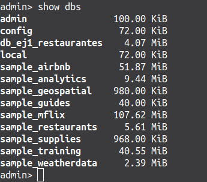
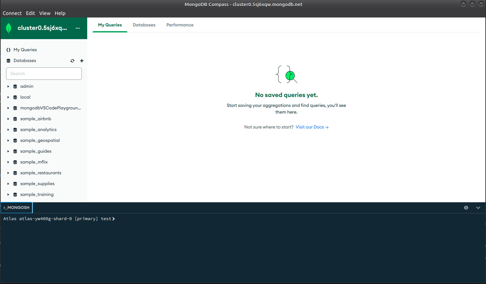

UD 2 - Procesado y Presentación Datos Almacenados - MongoDB¶
El nombre MongoDB proviene de la palabra inglesa "homongous" que significa enorme. MongoDB es, por tanto, un sistema de base de datos NoSQL, open source, orientado a documentos y escrito en lenguaje C++. Este sistema de bases de datos está disponible no solo para múltiples plataformas y sistemas operativos (Windows, Linux, OS X) sino también como servicio empresarial en la nube y se puede integrar con otros servicios como, por ejemplo, Amazon Web Services (AWS).
Tal y como se ha presentado anteriormente, MongoDB es un sistema de bases de datos documental u orientado a documentos. Esta orientación hace que los datos se almacenen de forma estructurada en forma de documentos, los cuales se acoplan sin problema en los tipos de datos utilizados por los lenguajes de programación. Además, esta concepción hace que una base de datos MongoDB disponga de un esquema dinámico y fácilmente modificable.
En este apartado se pretende poner de relieve las principales características de MongoDB que hacen que sea en la actualidad uno de los sistemas de bases de datos NoSQL más utilizados tanto en el ámbito académico como en el profesional.
Alto rendimiento: Gracias a la definición de los documentos y la creación de índices que hace que las lecturas y escrituras se realicen de forma más rápida.
Alta disponibilidad: MongoDB dispone de servidores replicados con restablecimiento automático maestro.
Fácil escalabilidad: Permitiendo distribuir colecciones de documentos entre diferentes máquinas de forma muy sencilla.
Indexación: Similar al concepto de índice en una base de datos relacional, permite crear índices e índices secundarios para mejorar el rendimiento de las consultas.
Consultas ad-hoc: Al igual que en una base de datos relacional, MongoDB da soporte a la búsqueda por campos, consultas de rangos, uso de expresiones regulares... A todo lo anterior, se añade la posibilidad de ejecutar y devolver una función JavaScript definida por el programador.
Replicación: Siguiendo el modelo maestro-esclavo. El maestro puede ejecutar comandos de lectura y escritura mientras que el esclavo solo tiene acceso de lectura y la posibilidad de realizar copias de seguridad. En caso de que el maestro caiga, el esclavo puede elegir un nuevo maestro para mantener el servicio de replicación.
Balanceo de carga: MongoDB es capaz de ejecutarse en múltiples servidores, pudiendo balancear la carga y/o duplicar los datos para mantener el correcto funcionamiento del sistema aunque se produzca un fallo hardware.
Almacenamiento de archivos: Todo lo anterior, facilita que este sistema de base de datos pueda ser usado con un sistema de archivos GridFS con balanceo de carga y replicación.
Agregación: Proporciona operadores de agregación y la posibilidad de utilizar funciones MapReduce para el procesamiento de datos por lotes.
Ejecución de Javscript del lado del servidor: Es posible realizar consultas utilizando JavaScript, de forma que éstas son enviadas directamente a la base de datos para ser ejecutadas.
Todas estas características hacen que, en la actualidad, MongoDB sea uno de los principales sistemas de bases de datos NoSQL elegidos en multitud de aplicaciones como: almacenamiento y registro de eventos, comercio electrónico, juegos, aplicaciones móviles, almacenes de datos, gestión de estadísticas en tiempo real y cualquier aplicación que requiera llevar a cabo analíticas sobre grandes volúmenes de datos.
Aunque MongoDB es un sistema de bases de datos NoSQL con todo lo que ello implica, también ofrece toda la funcionalidad de la que disponen las bases de datos relacionales. Sin embargo, la estructura de una base de datos MongoDB difiere de la de una base de datos relacional.
En un servidor MongoDB es posible crear tantas bases de datos como se desee. El concepto de base de datos es en este caso equivalente al de base de datos en los sistemas relacionales. Una vez creada, la base de datos estará compuesta por una o más colecciones. El término colección en el ámbito NoSQL es el equivalente al concepto de tabla en los sistemas relacionales.
Cada colección, por tanto, estará formada por un conjunto de documentos (o incluso ninguno, en cuyo caso la colección estaría vacía). El concepto de documento en NoSQL se corresponde con el concepto de registro en una base de datos relacional. Un documento estará compuesto por una serie de campos, al igual que lo están los registros de una base de datos relacional.
En el ámbito NoSQL, y más concretamente en MongoDB, cada documento viene dado por un archivo JSONhttp://www.json.org/(BSON, en realidad, que veremos justo en el siguiente punto) en el cual, siguiendo una estructura clave-valor se especifican las características de cada documento. El siguiente código muestra un ejemplo de documento que define un barco.
BSON es un formato de intercambio de datos usado principalmente para su almacenamiento y transferencia en la base de datos MongoDB. Es una representación binaria de estructuras de datos y mapas. El nombre BSON está basado en el término JSON y significa Binary JSON (JSON Binario). Consulta su especificación en su página oficial https://bsonspec.org/
BSON fue diseñado para tener las siguientes características
Ligero: Mantener la sobrecarga espacial al mínimo es importante para cualquier formato de representación de datos, especialmente cuando se utiliza a través de la red.
Transitable: BSON está diseñado para ser recorrido fácilmente. Esta es una propiedad vital en su papel como la principal representación de datos para MongoDB.
Eficiente: La codificación de datos a BSON y la decodificación desde BSON puede realizarse muy rápidamente en la mayoría de lenguajes debido al uso de tipos de datos C.
Un objeto BSON consiste en una lista ordenada de elementos. Cada elemento consta de un campo nombre, un tipo y un valor. Los nombres son de tipo String y los tipos pueden ser:
Figura BSON 1: Tipos de datos BSON. (Fuente: MongoDB)
EL valor de un Binary Data bindata es un array de bytes. Un valor de bindata tiene un subtipo que indica cómo interpretar los datos binarios. La siguiente tabla muestra los subtipos.
Figura BSON 2: Subtipos de datos BSON Binary Data. (Fuente: MongoDB)
Los ObjectIds object son pequeños, probablemente únicos, rápidos de generar y ordenados. Los valores de ObjectId tienen una longitud de 12 bytes y constan de:
4-byte timestamp, que representa la creación del ObjectId, medida en segundos desde la época de Unix.
Un valor aleatorio de 5 bytes generado una vez por proceso. Este valor aleatorio es exclusivo de la máquina y del proceso.
Un contador incremental de 3 bytes, inicializado a un valor aleatorio.
Note
En MongoDB, cada documento almacenado en una colección requiere un campo _id único que actúa como clave principal. Si un documento insertado omite el campo _id, el controlador MongoDB genera automáticamente un ID de objeto para el campo _id.
BSON String string son UTF-8. En general, los controladores para cada lenguaje de programación convierten del formato de cadena del lenguaje a UTF-8 al serializar y deserializar BSON. Esto hace posible almacenar la mayoría de los caracteres internacionales en cadenas BSON con facilidad. Además, las consultas $regex de MongoDB admiten UTF-8 en la cadena de expresiones regulares.
BSON tiene un tipo timestamp especial para uso interno de MongoDB y no está asociado con el estándar Tipo Date. Este tipo de marca de tiempo interna es un valor de 64 bits donde:
los 32 bits más significativos son un valor time_t(segundos desde la época Unix)
los 32 bits menos significativos son un ordinal incremental para operaciones dentro de un segundo determinado.
El tamaño máximo de documento BSON es de 16MB (ayuda a garantizar que un solo documento no pueda utilizar una cantidad excesiva de RAM ni ancho de banda). Para almacenar documentos que superen el tamaño máximo, MongoDB proporciona la API GridFS.
Para la administración del sistema de bases de datos, MongoDB pone a disposición de los usuarios las siguientes utilidades:
mongo: Se trata del shell interactivo de MongoDB que permite insertar, eliminar, actualizar datos y realizar consultas, además de replicar la información, apagar servidores y ejecutar código JavaScript.
mongostat: Herramienta de línea de comandos que muestra las estadísticas de una instancia en ejecución de MongoDB
mongotop: Herramienta de línea de comandos que muestra la cantidad de tiempo empleado en la lectura y escritura de datos por parte de la instancia en ejecución
mongosniff: Herramienta de línea de comandos que permite hacer un rastreo del tráfico de la red que va desde y hacia MongoDB.
mongoimport/mongoexport: Herramienta de línea de comandos para importar y exportar contenido en o desde .json, .csv o .tsv entre otros.
mongodump/mongorestore: Herramienta de línea de comandos para la creación de una exportación binaria del contenido de la base de datos.
BSON => JSON
Si necesitamos transformar un fichero BSON a JSON, usaríamos el comando (bsondump)[https://www.mongodb.com/docs/database-tools/bsondump/]:
Vamos a explicar como levantar un contenedor MongoDB con Docker
Docker engine vs Docker Desktop on Linux
Linux, ya tenemos por defecto docker engine para la ejecución de contenedores. Si instalamos docker desktop hay que tener en cuenta que docker desktop trabaja sobre un maquina virtual KVM. Esto significa que las imágenes desplegadas en docker engine no están disponibles en docker desktop y viceversa. Para ello podemos "jugar" con el contexto de docker.
2023-10-13T19:20:03.814+0000 preparing collections to restore from
2023-10-13T19:20:03.817+0000 reading metadata for sample_airbnb.listingsAndReviews from archive '/tmp/sampledata.archive'
2023-10-13T19:20:03.817+0000 reading metadata for sample_analytics.accounts from archive '/tmp/sampledata.archive'
2023-10-13T19:20:03.817+0000 reading metadata for sample_analytics.customers from archive '/tmp/sampledata.archive'
...
2023-10-13T19:20:14.010+0000 425367 document(s) restored successfully. 0 document(s) failed to restore.
Comprobamos. Entrar a la consola de mongo y autorizarnos
mongosh
use admin
db.auth("admin","admin")
Ver las bases de datos
show dbs

Figura Docker 2. Mostrar las Bases de datos con Mongo. (Fuente: Propia)
Usar la Base de datos (use nombre_bd , también sirve para crear una Base de datos)
use db_ej1_restaurantes
Ver las colecciones de la base de datos que estamos usando
Figura Atlas 2: MongoDB Atlas. Get Started. (Fuente: Propia)
Creamos cuenta
Añadir tu dirección ip a la lista de ips de acceso al cluster
Menú izquierdo => Network Access
Add IP Address (Derecha)
Figura Atlas 3: MongoDB Atlas. Añadir IP. (Fuente: MongoDB)
Desplegamos cluster gratuito. Creamos una Organización, Proyecto y una Base de Datos del cluster
Crear Organización
Figura Atlas 4: Añadir Organización. (Fuente: Propia)
Crear Proyecto
Figura Atlas 5: Añadir Proyecto. (Fuente: Propia)
Nueva Base de datos
Figura Atlas 6: Añadir Base de datos. (Fuente: Propia)
Creando cluster
Figura Atlas 7: Cluster. (Fuente: Propia)
Crear un usuario para la Base de Datos
Figura 8 Atlas: Nuevo usuario. (Fuente: Propia)
Cargar contenido en nuestra Base de Datos. Vamos a usar uno de los Data Set de ejemplo facilitados por el propio MongoDB.
Damos a la opción de los ... y Load Data Sample.
Figura Atlas 9. Cargar datos a la Base de Datos. (Fuente: Propia)
Browser Collections
Figura Atlas 10: Browser Collections. (Fuente: Propia)
Conectarte a tu cluster. Hay varias formas de conexión a tu cluster.
A MongoDB driver, un controlador para comunicarse con su base de datos MongoDB mediante programación. Soporta varios lenguajes de programación.
MongoDB Compass, una GUI para sus datos de MongoDB. Puede utilizar Compass para explorar, modificar y visualizar sus datos.
The MongoDB Shell, una interfaz de línea de comandos interactiva para MongoDB. Puedes usar mongosh para insertar e interactuar con datos en su clúster Atlas.
MongoDB for VS Code. Para trabajar MongoDB en VS Code
Atlas SQL. Para conectar fácilmente a Atlas para visualización y análisis de datos
Figura Atlas 11. Formas de conexión a Atlas. (Fuente: Propia)
Para esta conexión, solo necesitamos usar el comando mongosh con las credenciales configuradas anteriormente. Siguiendo los pasos dentro de connect en la opción Mongo Shell que nos da Mongo Atlas (figura anterior)
Figura Atlas 12. Connect Mongo Shell. (Fuente: Propia)
Y escribiendo después la contraseña establecida nos conectamos a nuestro al servicio cloud
Figura Atlas 13. Connect mongosh. (Fuente: Propia)
Figura MongoDB for VSCode 1. Extensión. (Fuente: Propia)
Damos a la opción de connect en nuestro MongoDB Atlas y seleccionamos MongoDB for VSCode. Seguimos los pasos que nos indican. Copiamos la url del punto 3 y le añadimos nuestra contraseña
Figura MongoDB for VSCode 2. Conectando con Mondo Atlas. (Fuente: Propia)
Vamos a nuestra extensión y le damos a connecting string y añadimos la url con nuestra contraseña.
Figura MongoDB for VSCode 3. Conectado con Mondo Atlas. (Fuente: Propia)
Seguimos los pasos y creamos un New Playground. Como test, ejecutamos (botón play arriba a la derecha) el playground creado por defecto. Observa el resultado, la salida en consola y los nuevos datos creados en nuestra Cloud Database.
Figura MongoDB for VSCode 4. Ejecutando playground. (Fuente: Propia)
Observa el código del playground. Presta especial atención a las palabras reservadas db, use, consolo.log(), print(), printjson(). Para mas información de uso consulta la documentación oficial
También puedes ejecutar una shell de mongoDB usando botón derecho sobre la conexión y pulsando Launch MongoDB Shell. Para ello debes tener en tu sistema MongoDB Shell
Figura MongoDB for VSCode 5. MongoDB Shell en VSCode. (Fuente: Propia)
MongoDB Compass es una potente GUI para consultar, agregar y analizar sus datos de MongoDB en un entorno visual. MongoDB Compass viene con 3 versiones diferentes:
Compass: La full version de MongoDB Compass, con todas las características y capacidades.
Readonly Edition: Esta versión se limita estrictamente a operaciones de lectura, y se eliminan todas las capacidades de escritura y eliminación (ideal para Analista de Datos).
Isolated Edition: Esta versión deshabilita todas las conexiones de red excepto la conexión a la instancia de MongoDB.
Info
Compass es de uso gratuito y está disponible en origen, y puede ejecutarse en macOS, Windows y Linux.
Para comprobar su funcionamiento, vamos a conectarnos a nuestra Base de Datos en Atlas:
Instalamos siguiendo los pasos de la documentación oficial.
Vamos a las opciones de conexión y elegimos la opción compass. Copiamos el string de conexión añadiendo nuestra contraseña.
Figura MongoDB Compass 1. Conexión mediante Compass. (Fuente: Propia)
En Compass, abrimos la opción de conexión y copiamos nuestro string de conexión.
Figura MongoDB Compass 2. String de conexión. (Fuente: Propia)
Ya podemos usar la GUI de Compass.

Figura MongoDB Compass 3. GUI de Compass 1. (Fuente: Propia)
Visualizar las Base de Datos, Collections y Documentos. Debajo también se nos abre una conexión con mongosh para realizar las operaciones que queramos en terminal si lo deseamos (la cual podemos minimizar).
Figura MongoDB Compass 4. GUI de Compass 2. (Fuente: Propia)
The MongoDB Database Tools son una colección de utilidades de línea de comandos para trabajar con una implementación de MongoDB. Las herramientas de base de datos incluyen los siguientes binarios:
Binary Import / Export:
mongodump: Crea una exportación binaria del contenido de un demonio mongod.
mongorestore: Restaura datos de un volcado de base de datos mongodump en un mongod o mongos (Para un shared cluster, las instancias de _mongos proporcionan la interfaz entre las aplicaciones cliente y el clúster fragmentado.)_
bsondump: Convierte archivos BSON dump into JSON.
Data Import / Export:
mongoimport: Importa el contenido desde un archivo externo E_xtended JSON, CSV, or TSV._
mongoexport:Produce una exportación JSON o CSV de datos almacenados en un instancia de mongod.
Diagnostic Tools:
mongostat: Proporciona una descripción general rápida del estado de una instancia de mongod o mongos actualmente en ejecución.
mongotop: Proporciona una descripción general del tiempo que una instancia de mongod dedica a leer y escribir datos.
GridFS Tools:
mongofiles: admite la manipulación de archivos almacenados en su instancia de MongoDB en objetos GridFS.
Puedes optar por descargar estas herramientas en local o utilizar algunas de las opciones mostradas anteriormente. La instancia de MongoDB creada en Docker también tiene por defecto todas estas herramientas.
Las operaciones de creación o inserción agregan nuevos documentos a una colección. Si la colección no existe actualmente, las operaciones de inserción crearán la colección.
MongoDB proporciona los siguientes métodos para insertar documentos en una colección:
db.collection.insertOne()
db.collection.insertMany()
En MongoDB, las operaciones de inserción tienen como objetivo una única colección. Todas las operaciones de escritura en MongoDB son atómicas al nivel de un solo documento.
Figura MongoDB Create Operations. (Fuente: MongoDB)
db.collection.insertOne() inserta un único documento dentro de una collection.
Note
El siguiente código inserta un nuevo documento en la colección de inventario. Si el documento no especifica un campo _id, MongoDB agrega el campo _id con un valor ObjectId al nuevo documento.
En primer lugar, antes de aprender como se realizan consultas en MongoDB, vamos a ver cuales son los operadores que facilita MongoDB para poder realizar todo tipo de consultas.
Mostraremos un resumen de todos los operadores (salvo aggregation operators que veremos más adelante cuando expliquemos agregaciones). Para más detalle, explicación y ejemplo de cada operador, la puedes encontrar en la documentación oficial
Seleccionar todos los documentos de un Collection¶
Para seleccionar todos los documentos de la colección, pasamos un documento vacío como parámetro de filtro de consulta al método de búsqueda. Esta operación utiliza un predicado de filtro de {}:
db.inventory.find({})
SELECT*FROMinventory
Para poder realizar cualquier tipo de consulta/búsqueda usaremos dentro de las {} los filtros/operadores (vistos en el punto anterior) para realizar todo tipo de consultas.
Una consulta compuesta puede especificar condiciones para más de un campo en los documentos de la colección. Implícitamente, una conjunción lógica AND conecta las cláusulas de una consulta compuesta de modo que la consulta selecciona los documentos de la colección que coinciden con todas las condiciones.
El siguiente ejemplo recupera todos los documentos de la colección donde el estado es igual a "A" y la cantidad es menor que $lt 30:
Con el operador $or, puedes especificar una consulta compuesta que una cada cláusula con una conjunción OR lógica para que la consulta seleccione los documentos de la colección que coincidan con al menos una condición.
El siguiente ejemplo recupera todos los documentos de la colección donde el estado es igual a "A" o la cantidad es menor que $lt 30:
En el siguiente ejemplo, el documento de consulta compuesta selecciona todos los documentos de la colección donde el estado es igual a "A" y la cantidad es menor que $lt 30 o el elemento comienza con el carácter p:
El siguiente ejemplo utiliza el método db.collection.updateOne() en la colección de inventario para actualizar el primer documento donde elemento es igual a "paper":
utiliza el operador $set para actualizar el valor del campo size.uom a "cm" y el valor del campo de estado a "P",
utiliza el operador $currentDate para actualizar el valor del campo lastModified a la fecha actual. Si el campo lastModified no existe, $currentDate creará el campo.
El siguiente ejemplo utiliza el método db.collection.updateMany() en la colección de inventory para actualizar todos los documentos donde la cantidad es inferior a 50:
utiliza el operador $set para actualizar el valor del campo size.uom a "in" y el valor del campo de estado a "P",
utiliza el operador $currentDate para actualizar el valor del campo lastModified a la fecha actual. Si el campo lastModified no existe, $currentDate creará el campo.
Para reemplazar todo el contenido de un documento excepto el campo _id, pase un documento completamente nuevo como segundo argumento a db.collection.replaceOne().
Al reemplazar un documento, el documento de reemplazo debe consistir únicamente en pares de campo/valor; es decir, no incluir actualizar operadores expresiones.
El documento de reemplazo puede tener campos diferentes a los del documento original. En el documento de reemplazo, puede omitir el campo _id ya que el campo _ides inmutable; sin embargo, si incluye el campo _id, debe tener el mismo valor que el valor actual.
El siguiente ejemplo reemplaza el primer documento de la colección de inventario donde elemento: "papel":
Podemos especificar criterios o filtros que identifiquen los documentos que se eliminarán. Los filtros utilizan la misma sintaxis que las operaciones de lectura.
Para especificar condiciones de igualdad, utilizamos expresiones <campo>:<valor> en el documento de filtro de consulta:
{<campo1>:<valor1>,...}
Una consulta de documento con filtro podemos utilizar los operadores de consulta para especificar condiciones de la siguiente forma:
{<campo1>:{<operador1>:<valor1>},...}
Entonces, para eliminar todos los documentos que coincidan con un criterio de eliminación, pasamos un filtro por parámetro al método deleteMany().
Lo vemos en el siguiente ejemplo, donde eliminamos todos los documentos de la colección de inventario donde el campo de estado es "A":
db.inventory.deleteMany({status:"A"})
El método devuelve un documento con el estado de la operación.
Delete Only One Document that Matches a Condition¶
Para eliminar como máximo un único documento que coincida con un filtro específico (aunque varios documentos puedan coincidir con el filtro especificado), utilizamos el método db.collection.deleteOne().
En el siguiente ejemplo elimina el primer documento cuyo estado es "D":
Hay una larga lista de operadores que te permiten establecer cada una de las etapas de los Aggregation Pipelines. En la documentación oficial tienes la lista completa.
A continuación extraemos los más utilizados a modo de resumen:
Estado
Descripción
$project
Cambia la forma de cada documento en la secuencia, por ejemplo agregando nuevos campos o eliminando campos existentes. Por cada documento de entrada, genera un documento.
$match
Filtra el stream de documentos para permitir que solo los documentos coincidentes pasen sin modificaciones a la siguiente etapa del proceso. $match utiliza consultas estándar de MongoDB. Para cada documento de entrada, genera un documento (una coincidencia) o cero documentos (ninguna coincidencia).
$group
Agrupa los documentos de entrada por una expresión de identificador especificada y aplica las expresiones del acumulador, si se especifican, a cada grupo. Consume todos los documentos de entrada y genera un documento por cada grupo distinto. Los documentos de salida solo contienen el campo identificador y, si se especifica, campos acumulados.
$sort
Reordena el flujo de documentos según una clave de clasificación especificada. Sólo cambia el orden; los documentos permanecen sin modificaciones. Por cada documento de entrada, genera un documento.
$skip
Omite los primeros n documentos donde n es el número de omisión especificado y pasa los documentos restantes sin modificar a la canalización. Para cada documento de entrada, genera cero documentos (para los primeros n documentos) o un documento (si está después de los primeros n documentos).
$limit
Pasa los primeros n documentos sin modificar al pipeline, donde n es el límite especificado. Para cada documento de entrada, genera un documento (para los primeros n documentos) o cero documentos (después de los primeros n documentos).
$unwind
Deconstruye un campo de matriz a partir de los documentos de entrada para generar un documento para cada elemento. Cada documento de salida reemplaza la matriz con un valor de elemento. Para cada documento de entrada, genera n documentos donde n es el número de elementos de la matriz y puede ser cero para una matriz vacía.
Tabla 1: Operadores de aggregations más usados en MongoDB
Una vez vista la información sobre Agreggation vamos a aprender a usarlo usando pequeños ejemplos. Para ello vamos a tomar como base la siguiente colección orders de pedidos de pizzas. Recuerda asegurarte de tener la collection vacía.
db.orders.deleteMany({})
Info
Aggregation Pipelines que se ejecutan con el método db.collection.aggregate() no modifican los documentos de una colección, a menos que la canalización contenga una etapa $merge o $out.
Este ejemplo contiene dos etapas y devuelve la cantidad total del pedido de pizzas de tamaño "medium" agrupadas por nombre de pizza:
db.orders.aggregate([// Etapa 1: Filtramos los documentos por el tamaño de la pizza{$match:{size:"medium"}},// Etapa 2: Agrupe los documentos restantes por nombre de pizza y calcule la cantidad total{$group:{_id:"$name",totalQuantity:{$sum:"$quantity"}}}])
La etapa de $match:
Filtra los documentos de pedido de pizza a pizzas de tamaño mediano.
Pasa los documentos restantes a la etapa de $group.
La fase de $group:
Agrupa los documentos restantes por nombre de pizza.
Utiliza $sum para calcular la cantidad total del pedido para cada $name de pizza. El total se almacena en el campo totalQuantity devuelto por la aggregation pipeline.
Calcular el valor total del pedido y la cantidad promedio del pedido¶
El siguiente ejemplo calcula el valor total del pedido de pizza y la cantidad promedio del pedido entre dos fechas:
db.orders.aggregate([// Etapa 1: Filtramos los documentos de pedidos de pizza por rango de fecha{$match:{"date":{$gte:newISODate("2020-01-30"),$lt:newISODate("2022-01-30")}}},// Etapa 2: Agrupamos los documentos recibidos por $match por fecha y calculamos los resultados{$group:{_id:{$dateToString:{format:"%Y-%m-%d",date:"$date"}},totalOrderValue:{$sum:{$multiply:["$price","$quantity"]}},averageOrderQuantity:{$avg:"$quantity"}}},// Etapa 3: Ordenamos los documentos por por totalOrderValue en orden descendente{$sort:{totalOrderValue:-1}}])
La etapa de $match:
Filtra los documentos de pedido de pizza en un rango de fechas especificado usando $gte y $lt.
Pasa los documentos restantes a la fase de $group.
La etapa $group:
Agrupa los documentos por fecha usando $dateToString.
Para cada grupo, calcula:
Valor total del pedido usando $sum y $multiply.
Cantidad promedio de pedido usando $avg.
Pasa los documentos agrupados a la etapa $sort.
La etapa de $sort:
Ordena los documentos por el valor total del pedido para cada grupo en orden descendente (-1).
db.restaurantes.find({"restaurant_id":"41156888"})// Listamos primero para ver las que tiene actualmentedb.restaurantes.updateOne({"restaurant_id":"41156888"},{$push:{grades:{"date":ISODate("2016-01-02T00:00:00.000Z"),"grade":"A","score":14}}})db.restaurantes.find({"restaurant_id":"41156888"})// Comprobamos que se ha añadido correctamente